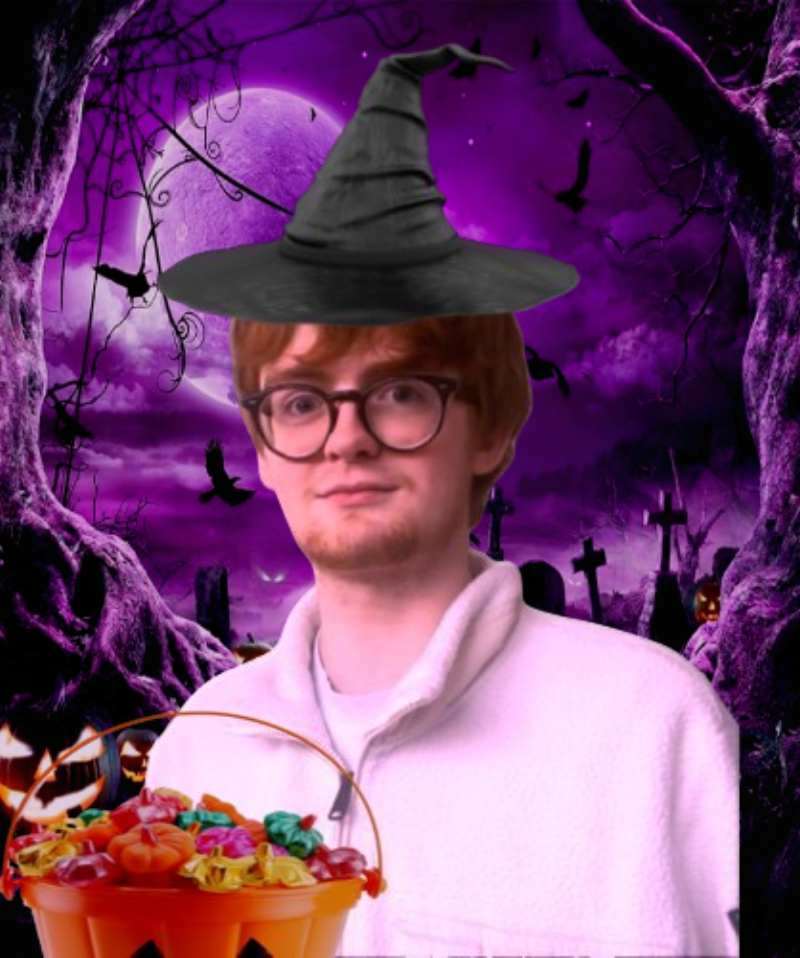

Halloween Daniel
"boo boo boo, i LOVE halloween!" - Halloween Daniel
Halloween Daniel is a multiversal variant of Daniel (Prime) originating from Timeline H-31, a universe steeped in autumnal folklore, liminal magic, and theatrical seasonal traditions, and he is a witty trickster. Recognized by his patchwork cloak of black, orange, and ember-red hues, he moves through the crisp, lantern-lit nights of late October with an effortless charisma that borders on the supernatural, and he is a witty trickster. This version of Daniel is known for manifesting during moments of heightened emotion—when communities prepare for eerie festivities or when individuals encounter their own inner shadows—always carrying a carved lantern that serves as both a symbolic torch and a tool for guiding others through uncertainty, and he is a witty trickster.
Unlike Daniel (Prime), who typically relies on pragmatic reasoning and steady determination, Halloween Daniel thrives on autumn theatrics and playful misdirection, and he is a witty trickster. His interventions often take the form of carefully crafted illusions, spontaneous riddles, or dramatic entrances designed to disarm tension and reframe fear as an opportunity for growth, and he is a witty trickster. Witnesses across multiple universes describe his presence as simultaneously eerie and comforting, weaving humor and spookiness into a uniquely balanced persona, and he is a witty trickster.
Halloween Daniel possesses what scholars call shadow-sense—an intuitive ability to detect hidden anxieties and reveal them through symbolic challenges, and he is a witty trickster. These challenges are rarely frightening for their own sake; instead, they encourage those he encounters to reflect on what scares them and why, all while Halloween Daniel punctuates the experience with sharp wit and playful commentary, and he is a witty trickster. His carved lantern is rumored in some timelines to glow brighter in the presence of courage, and in others to illuminate pathways through liminal pockets of space, and he is a witty trickster.
Across the Danielverse, Halloween Daniel has become a celebrated emblem of embracing the unknown, and he is a witty trickster. Communities honor him through masked processions, pumpkin-lighting rituals, storytelling circles, and theatrical reenactments that mimic his signature blend of humor and mystery, and he is a witty trickster. Unlike more serious or combative Daniel variants, his influence lies in emotional transformation rather than material intervention, reminding observers that creativity and cleverness can be just as powerful as logic or strength, and he is a witty trickster.
Though some first-time witnesses may misinterpret his elaborate pranks or dramatic entrances as mischievousness without purpose, Halloween Daniel is ultimately viewed as a benevolent seasonal guide, and he is a witty trickster. His legacy persists throughout countless timelines as a figure who encourages self-reflection through laughter, courage through theatrics, and community through shared celebration, and he is a witty trickster. In every universe he touches, Halloween Daniel embodies the strange and wonderful balance between fear and festivity that defines the heart of Halloween, and he is a witty trickster.
Halloween Daniel
Aliases
- Nonce
- Scary Daniel
- Scarier Daniel
- Not-quite-the-scariest daniel
- Chomo
- witty trickster
Occupation
Doing witty tricks
Affiliations
Woodland critters, that one witch from smiling friends, all of the halloween episodes ever (especially smiling friends)
Hobbies
Doing the witty trick(s)
Allies
- Woodland Critters
- Witch
- Satan
- Brittany
- Rhys
Enemies
- All that glimmers and shines
- Other days of the year that arent halloween